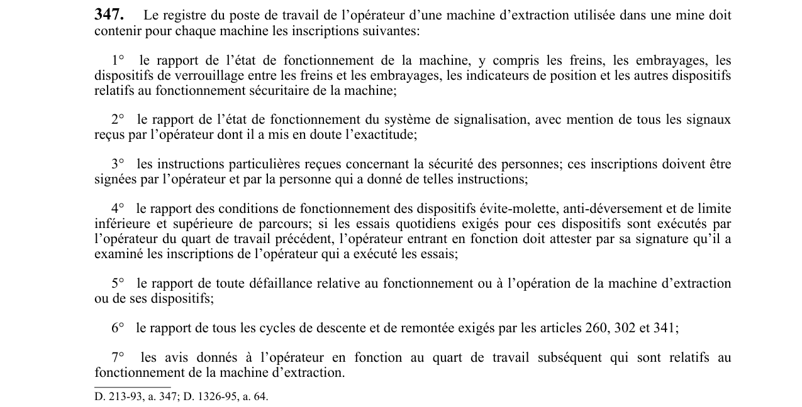

art-347-RSSM : registre poste travail opérateur machine
Le registre du poste de travail de l’opérateur d’une machine d’extraction utilisée dans une mine doit contenir pour chaque machine les inscriptions suivantes: 1° le rapport de l’état de fonctionnement de la machine, y compris les freins, les embrayages, les dispositifs de verrouillage entre les freins et les embrayages, les indicateurs de position et les autres dispositifs relatifs au fonctionnement sécuritaire de la machine; 2° le rapport de l’état de fonctionnement du système de signalisation, avec mention de tous les signaux reçus par l’opérateur dont il a mis en doute l’exactitude; 3° les instructions particulières reçues concernant la sécurité des personnes; ces inscriptions doivent être signées par l’opérateur et par la personne qui a donné de telles instructions; 4° le rapport des conditions de fonctionnement des dispositifs évite-molette, anti-déversement et de limite inférieure et supérieure de parcours; si les essais quotidiens exigés pour ces dispositifs sont exécutés par l’opérateur du quart de travail précédent, l’opérateur entrant en fonction doit attester par sa signature qu’il a examiné les inscriptions de l’opérateur qui a exécuté les essais; 5° le rapport de toute défaillance relative au fonctionnement ou à l’opération de la machine d’extraction ou de ses dispositifs; 6° le rapport de tous les cycles de descente et de remontée exigés par les articles 260, 302 et 341; 7° les avis donnés à l’opérateur en fonction au quart de travail subséquent qui sont relatifs au fonctionnement de la machine d’extraction. Cette obligation vise l'employeur.
🌐 LegisQuébec · 📄 PDF officiel
Texte officiel : capture du PDF
{kind=link}

Toucher l'image pour l'agrandir🔗 Voir art. 347 RSSM dans le PDF (page 91)
Version : texte officiel du RSSM (RLRQ c. S-2.1, r. 14), à jour au 1er mai 2024 — Éditeur officiel du Québec
Voir aussi
- art. 346 : inscriptions exigées historique câble extraction · obligation : en plus des inscriptions exigées à l’article 345, un historique du câble d’extraction ou du câble d’équilibre mentionnant les…
- art. 348 : inscriptions lues contresignées opérateur machine · obligation : les inscriptions prévues à l’article 347 doivent être lues et contresignées par l’opérateur de la machine d’extraction du quart de…
- ⚖️ Loi habilitante : LSST
- ↑ Index du bloc : Installations d'extraction
Pages qui pointent ici (5)
- art-341-RSSM : extraction été interrompue puits pendant Recueil législatif
- art-346-RSSM : inscriptions exigées historique câble extraction Recueil législatif
- art-348-RSSM : inscriptions lues contresignées opérateur machine Recueil législatif
- art-349-RSSM : inscriptions notées signées opérateurs durée Recueil législatif
- RSSM : Installations d'extraction (art. 281 à 349) Recueil législatif